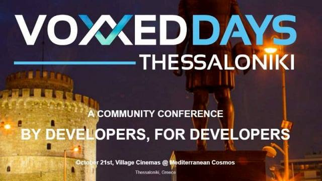

Τα “Voxxed Days” πρόκειται για τα μεγαλύτερα Software Development Congresses. Είναι μία σειρά από τεχνολογικά συνέδρια που διοργανώνονται από τοπικές κοινότητες (όπως user groups, meetups κτλ.) και υποστηρίζονται από την ομάδα του Voxxed. Στηριζόμενα πάνω στη φιλοσοφία των συνεδρίων Devoxx η οποία θέλει το περιεχόμενο να παίζει πρωταρχικό ρόλο, τα Voxxed Days συνέδρια προσελκύουν διεθνείς και τοπικούς ομιλητές σε δεκάδες πόλεις σε όλον τον κόσμο.
Με μεγάλη περηφάνια και ενθουσιασμό είμαστε στη θέση να ανακοινώσουμε ότι το πρώτο VOXXED Days THESSALONIKI συνέδριο θα πραγματοποιηθεί τον ερχόμενο Οκτώβριο, την Πέμπτη 20 και την Παρασκευή 21 του μηνός στη Θεσσαλονίκη. Στο συνέδριο που θα διαρκέσει 2 ημέρες θα παραβρεθούν διάσημοι ομιλητές από όλη την Ευρώπη, έμπειροι προγραμματιστές από τις πιο γνωστές τεχνολογίες ανοιχτού λογισμικού και καταξιωμένοι επαγγελματίες που με χαρά μοιράζονται τις εμπειρίες και τις γνώσεις τους. - Η Πέμπτη 20 Οκτώβρη θα είναι μια ημέρα γεμάτη workshops, ενώ την Παρασκευή 20 Οκτώβρη θα ακολουθήσουν: 2 keynote ομιλητές, 3 παράλληλες αίθουσες με πλήθος θεμάτων (Server Side Java, Java SE, Cloud & Big Data, Web & HTML, Mobile, JVM, Architecture & Security, Methodology, & Future Technologies) . Με 17 ομιλητές οι συμμετέχοντες σίγουρα μπορουν να ικανοποιήσουν τις ανάγκες τους για να έρθουν σε επαφή με νέες τεχνολογίες και πρακτικές ανάπτυξης λογισμικού σε ένα χαλαρό περιβάλλον διασκέδασης και κοινωνικής δικτύωσης.
Ανάμεσα στους διεθνής ομιλητές που θα έχουμε την τιμή να καλωσορίσουμε είναι ο Simon Ritter, CTO της Ajul Systems, ευαγγελιστής της Java και του OpenJDK, o Sandro Mancuso, συγγραφέας του Software Craftsmanship και ιδρυτής της Codurance, o Todd Motto κορυφαίος AngularJS προγραμματιστής, αναγνωρισμένος ως Developer Expert από την Google, ο Δημήτρης Ανδρεάδης, Principal Software Engineer στη RedHat, o Danilo Poccia, ευαγγελιστής στην Amazon Web Services και και o Timo Derstappen, CTO και ιδρυτής της Giant Swarm.
Το συνέδριο θα πραγματοποιηθεί σε ένα μοντέρνο και ιδανικό για τέτοιου είδους εκδηλώσεις χώρο με τεράστιες και HD οθόνες για την καλύτερη δυνατή παρακολούθηση των ομιλητών. Οι συμμετέχοντες θα έχουν την ευκαιρία να απολαύσουν μια ιδιαίτερη εμπειρία στις αίθουσες των Village Cinemas του Mediterranean Cosmos, το οποίο βρίσκεται στην Ν. Ανατολική Θεσσαλονίκη στην Πυλαία. Το Mediterranean Cosmos είναι το πρώτο και το μεγαλύτερο εμπορικό κέντρο στη Β. Ελλάδα προσφέροντας μία μεγάλη ποικιλία από δραστηριότητες στους χιλιάδες επισκέπτες που δέχεται καθημερινά.
Το Voxxed Days Thessaloniki σε λίγες γραμμές
- Ομιλητές: 2 Keynote, 17 διεθνείς και καταξιωμένοι ομιλητές
- Θεματολογία: DevOps, Server Side Java, Java SE, Cloud & Big Data, Web & HTML, JVM, Architecture, Methodology) σε 3 παράλληλες αίθουσες
- Σεμινάρια: 3 full-day σεμινάρια μία μέρα πριν το βασικό συνέδριο
- Τοποθεσία: Village Cinemas @Mediterranean Cosmos
- Γλώσσα: Αγγλικά
- Τιμές εισιτηρίων
- 60€ (μέχρι 30/6), είσοδος στο Voxxed Days, γεύμα, καφέδες, σνακ και gift bag από τους sponsors
- 80€, είσοδος στο Voxxed Days, γεύμα, καφέδες, σνακ και gift bag από τους sponsors
- 40€ (για φοιτητές και ανέργους σε περιορισμένο αριθμό), είσοδος στο Voxxed Days, γεύμα, καφέδες, σνακ και gift bag από τους sponsors
- 110€, είσοδος στο Voxxed Days, γεύμα, καφέδες, σνακ και gift bag από τους sponsors + είσοδος στο δείπνο των ομιλητών που θα γίνει την προηγούμενη ημέρα, 20 Οκτωβρίου + 10’ τετ-α-τετ με τον αγαπημένο ομιλητή για ένα συντομο Interview!
- Τα workshops έχουν ξεχωριστό εισιτήριο και δεν συμπεριλαμβάνονται στα παραπάνω